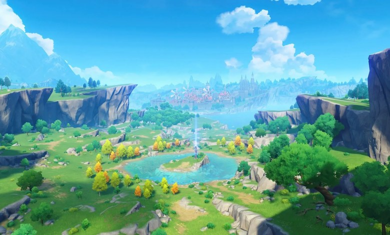

Teyvat
Welcome to the world of Teyvat, home to many creatures, monsters and people! In teyvat 7 elements roam free, these elements are Pyro, Hydro, Cryo, Electro, Anemo, Geo and Dendro. Some people who have stong enough ambition are given a vision to control a certain element. These visions are given to Gods known as Archons who rule over their own element and own region. Each region is unique and has many surprises in store. The world of Teyvat is massive and with many unique regions it is filled to the brim with adventure and discovery. From puzzles to amazing sights, domains and huge boss monsters,Teyvat has so many to do and your journey starts here. Here you will learn about the different playable regions in Genshin Impact Mondstadt, Liyue and Inazuma. Learning mostly about what makes each region special and cool trivial about each one. And hopefully this will help in your travels and expand your knowledge of Teyvat. Have fun travelling with theis guide by your side and safe travels!
Ad astra abyssosque!